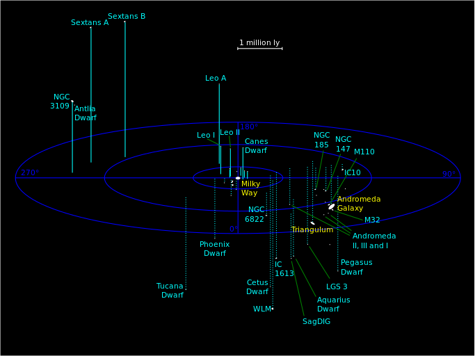

Local Group
The Milky Way is the galaxy that includes the Solar System, with the name describing the galaxy's appearance from Earth: a hazy band of light seen in the night sky formed from stars that cannot be distinguished by the naked eye. source: wikipedia
The two largest members, the Andromeda and the Milky Way galaxies, are both spiral galaxies with masses of about 1012 solar masses each. Each has its own system of satellite galaxies: The Andromeda Galaxy's satellite system, The Milky Way's satellite galaxies system source: wikipedia
List of galaxies in our local group:
- Milky Way Galaxy
- Andromeda
- Triangulum Galaxy
- Leo I
- NGC 6822
- Messier 32
- Sagittarius Dwarf Galaxy
- Ursa Major I Dwarf Galaxy
- Leo I
- Leo II
- Leo I
- Fornax Dwarf Galaxy
- Sculptor Dwarf Galaxy
- Sextans Dwarf Galaxy